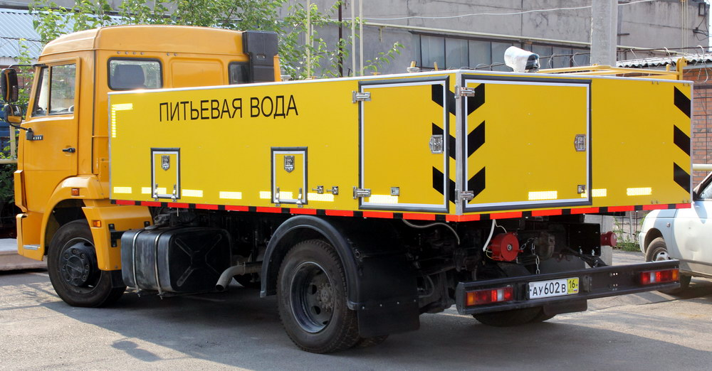

МАШИНА ВОДОЗАПРАВОЧНАЯ АЭРОДРОМНАЯ МВА
Предназначена для транспортирования, кратковременного хранения, заправки питьевой водой воздушных судов (ВС).
МВА приспособлена для эксплуатации во внеклассных, I, II,III класса аэропортах, а также международных аэропортах гражданской авиации.
МВА изготовлена в климатическом исполнении -У, категория размещения – 1 по ГОСТ 15150. Заправочная машина может использоваться при температуре атмосферного воздуха длительно от минус 40°С до плюс 40°С без использования отопительной системы.
Машина водозаправочная аэродромная МВА предназначена для эксплуатации только на территории аэропорта.
Машина водозаправочная аэродромная МВА может быть изготовлена на шасси отечественного или импортного производства по согласованию с Заказчиком.
АЭРОДРОМНАЯ МАШИНА ДЛЯ ПРОТИВООБЛЕДЕНИТЕЛЬНОЙ ОБРАБОТКИ ВОЗДУШНЫХ СУДОВ АПМ-14 (ДЕАЙСЕР)

Аэродромная противообледенительная машина АПМ-14 (деайсер) предназначена для удаления льда и предотвращения обледенения корпусов воздушных судов (ВС) за счет распыления противообледенительными составами, обеспечивающими безопасный взлёт.
АПМ-14 изготовлена в климатическом исполнении -У (при рабочей температуре окружающего воздуха от минус 40С до плюс 40С ), категория размещения – 1 по ГОСТ 15150.
Аэродромная противообледенительная машина АПМ-14 предназначена для эксплуатации только на территории аэропорта.
АВТОМОБИЛЬ СПЕЦИАЛЬНЫЙ ДЛЯ ОБСЛУЖИВАНИЯ ТУАЛЕТНЫХ ОТСЕКОВ ВОЗДУШНЫХ СУДОВ ТСА (ТУАЛЕТ-СЕРВИС)
Автомобиль для обслуживания туалетных отсеков воздушных судов ТСА предназначен для очистки, промывки и заправки водой и хим. жидкостью баков туалетных отсеков воздушных судов (ВС).
ТСА приспособлен для эксплуатации во внеклассных, I, II,III класса аэропортах, а также международных аэропортах гражданской авиации.
ТСА изготовлен в климатическом исполнении -У, категория размещения – 1 по ГОСТ 15150. ТСА может использоваться при температуре атмосферного воздуха длительно от минус 40°С до плюс 40°С.
Автомобиль специальный ТСА предназначен для эксплуатации только на территории аэропорта.
Автомобиль специальный ТСА может быть изготовлен на шасси отечественного и импортного производства по согласованию с Заказчиком.
АЭРОДРОМНЫЙ ЗАПРАВЩИК СПЕЦИАЛЬНЫМИ ЖИДКОСТЯМИ И МАСЛАМИ АГРЕГАТОВ ВОЗДУШНЫХ СУДОВ АЗСЖМ
Аэродромный заправщик АЗСЖМ предназначен для приема, кратковременного хранения, доставки и заправки спец.жидкостями и маслами агрегатов воздушных судов(далее ВС).
АЗСЖМ приспособлен для эксплуатации во внеклассных,I, II,III класса аэропортах, а также международных аэропортах гражданской авиации.
АЗСЖМ изготовлен в климатическом исполнении -У, категория размещения – 1 по ГОСТ 15150. АЗСЖМ может использоваться при температуре атмосферного воздуха длительно от плюс 5 до плюс 40°С без использования отопительной системы.
При использовании отопительной системы аэродромный заправщик может длительно использоваться при температуре атмосферного воздуха от плюс 5 до минус 40°С.
Аэродромный заправщик АЗСЖМ предназначен для эксплуатации только на территории аэропорта.
* Данные машины являются собственной разработкой компании "ДКДжет", изготавливаемые на базе нашего предприятия.